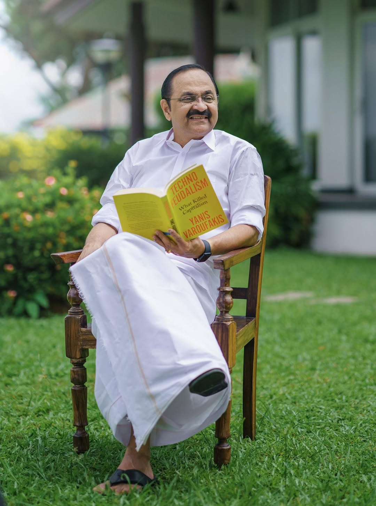

18 May 2026
Paravur, Ernakulam
Indian National Congress
31 May 1964, Nettoor

Consecutive MLA
terms won
UDF seats in 140-seat
Assembly, 2026
Lok Sabha seats won
by UDF in 2024
Adjournment motions
—
an Assembly record
Shri V. D. Satheesan (Vadasseri Damodara Menon Satheesan) is the 13th Chief Minister of Kerala and a senior leader of the Indian National Congress. Born on 31 May 1964 in Nettoor, Ernakulam district, he has been an active participant in Kerala's political and public life for several decades.
Beginning his political journey through student and youth movements, Satheesan emerged as a prominent voice for democratic values, social justice, and public welfare. He has represented the Paravur constituency in the Kerala Legislative Assembly multiple times and is known for his strong legislative performance and effective representation of people's issues.
Throughout his career, he has focused on education, infrastructure, employment generation, environmental protection, and social development. His active participation in legislative debates and public policy discussions has earned him recognition as one of Kerala's leading political figures.
Sworn in as Chief Minister on 18 May 2026, Shri V. D. Satheesan leads the Government of Kerala with a vision of inclusive growth, transparent governance, technological innovation, and sustainable development. His administration is committed to strengthening public services, attracting investment, creating employment opportunities, and improving the quality of life for all citizens of Kerala.